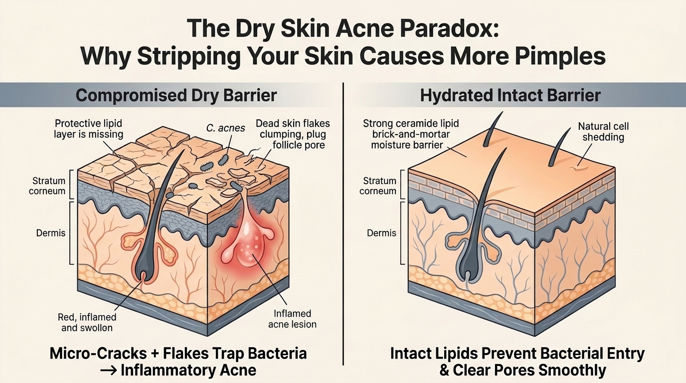
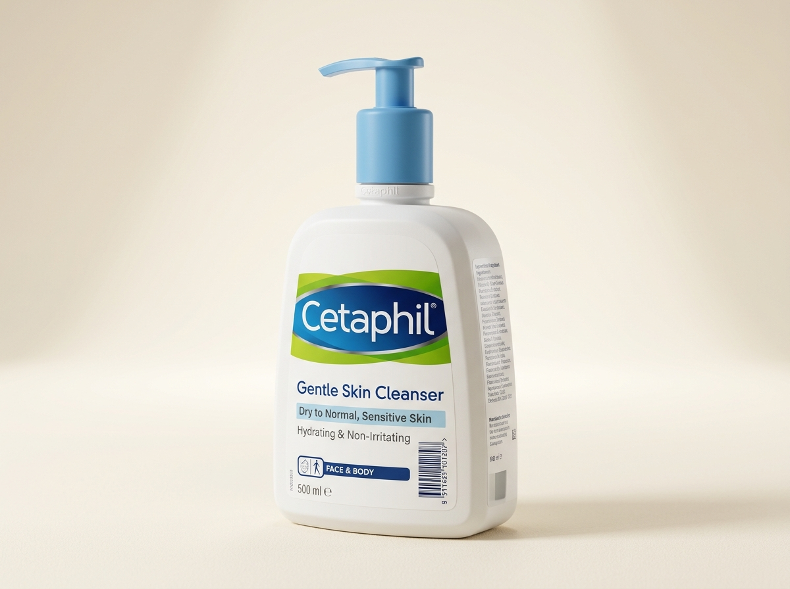
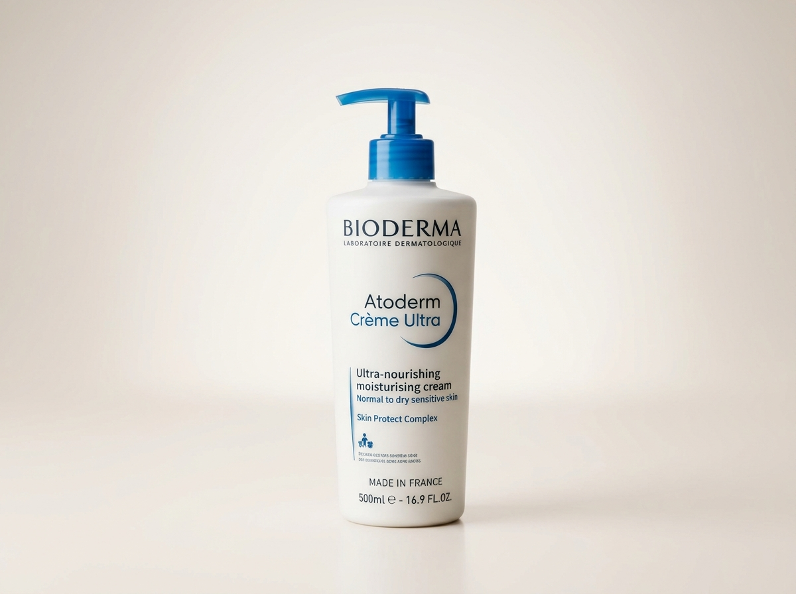

The Barrier Paradox: How Does Dry Skin Get Acne?
Almost everyone grows up hearing that acne is an "oily skin problem." Because of this, people who have naturally dry or tight skin feel bewildered when pimples appear. They often wonder: "If my skin produces almost no oil, why am I breaking out?"
The answer lies in the biology of your skin barrier. Think of your outer skin layer (the stratum corneum) as a brick wall[1]. The skin cells are the bricks, and natural lipids—specifically ceramides, cholesterol, and free fatty acids—are the mortar holding them together.

The Two Underlying Causes of Dry Skin Acne
When your skin lacks adequate moisture and protective lipids, two specific problems happen simultaneously:
- 1. Micro-Cracks Let Bacteria Enter: Without adequate lipid mortar, your skin surface develops microscopic fissures. Bacteria (Cutibacterium acnes) that normally live harmlessly on the surface can easily slip through these fissures and enter the hair follicles, triggering acute swelling[1].
- 2. Sticky Dead Flakes Plug the Pore: In healthy, well-hydrated skin, specialized water-dependent enzymes shed dead cells smoothly one by one. In dry skin, these enzymes become sluggish. Instead of shedding smoothly, dry cells stick together in clumped flakes. These flakes fall into the pore opening and plug it, creating a microcomedone[2],[4].
Why Standard Acne Washes Make Dry Skin Worse
When a dry-skin individual gets a breakout, the first instinct is usually to visit a chemist and buy a foaming acne cleanser with 2% Salicylic Acid or an aggressive benzoyl peroxide spot gel. Here is what happens next:
The Vicious Stripping Cycle
Step 1: You wash with a bubbly foam that strips away 100% of your remaining surface lipids[3].
Step 2: Your skin feels squeaky clean, then immediately tight, stinging, and parchment-dry.
Step 3: The barrier micro-cracks widen. Trans-Epidermal Water Loss (TEWL) spikes.
Step 4: Within 48 hours, new painful red bumps erupt around the dry patches, accompanied by flaking and burning.
To treat acne on dry skin, you must completely stop treating it like an oily teenager's skin. Your skin does not need degreasing—it needs barrier replenishment paired with non-stripping antibacterial therapy[3],[6].
Dry vs. Oily Skin Acne: The Diagnostic Check
Knowing whether your acne is rooted in excess sebum or a compromised moisture barrier changes every single step of your skincare routine:
| Symptom | Dry Skin Acne (Barrier Deficit) | Oily Skin Acne (Sebum Excess) |
|---|---|---|
| Midday Skin Feel | Tight, parched, rough, or flaking around mouth and cheeks. | Shiny, greasy slip across forehead, nose, and chin. |
| Pimple Appearance | Small, red, sensitive bumps with dry crusting around the edges. | Large, juicy pustules, oily whiteheads, and prominent blackheads. |
| Reaction to Acne Washes | Stinging, burning, increased redness, and rapid peeling. | Temporary oil reduction without burning or irritation. |
| Root Pore Cause | Sticky dead flakes plugging a dry pore + bacterial entry via cracks[2]. | Overactive sebaceous glands flooding the pore with thick sebum. |
| Primary Treatment Goal | Heal the moisture barrier with ceramides and Azelaic Acid. | Control oil production with Salicylic Acid and BPO. |
Barrier-Safe Actives: Clearing Acne Without Peeling
You can clear acne while having dry skin, but you must select actives that target bacteria and cellular turnover without destroying intercellular lipids:
1. Azelaic Acid (10% to 15%) — The Dermatologist Gold Standard
Azelaic Acid is naturally anti-inflammatory, kills C. acnes bacteria, and gently normalizes how cells shed inside the pore[5]. Unlike benzoyl peroxide or high-strength salicylic acid, it does not strip moisture or induce severe peeling. In addition, it blocks tyrosinase to stop post-acne dark spots from forming on Indian skin[7].
2. Adapalene 0.1% via the "Sandwich Method"
Adapalene is a targeted third-generation retinoid that unclogs microcomedones. If applied directly to dry skin, it can cause severe flaking. However, using the moisturizer sandwich method (moisturizer first, wait 10 minutes, apply a pea-sized dab of adapalene, moisturizer on top) buffers absorption while delivering full anti-acne benefits.
3. Short Contact Therapy (SCT) for Benzoyl Peroxide
If you have an angry pustule and need the rapid bacteria-killing punch of Benzoyl Peroxide (2.5%), do not leave it on overnight. Apply it for just 5 to 10 minutes, then wash it off gently with lukewarm water before applying your barrier cream. Studies prove this provides equal antimicrobial clearance with 80% less irritation.
Dermatologist-Approved Dry Skin Acne Lineup
A dry skin acne routine requires non-stripping cleansers, lipid-restoring hydrators, and gentle actives available in Indian pharmacies:

Cetaphil Gentle Skin Cleanser

Bioderma Atoderm Crème Ultra

Micro Labs Aziderm 10% Gel
The Barrier-First Daily Routine for Dry Skin Acne
Follow this simple morning and evening routine designed to soothe tightness while clearing breakouts systematically:
☀️ Morning Routine (Hydrate & Protect)
- Lukewarm Water Splash: Skip cleanser in the morning. Simply splash your face with plain lukewarm water to preserve natural overnight lipids.
- Hydrating Serum (Optional): Apply pure Hyaluronic Acid or Centella Asiatica serum to damp skin.
- Nourishing Barrier Moisturizer: Apply a blueberry-sized amount of Bioderma Atoderm Crème or a ceramide cream.
- Broad-Spectrum Sunscreen: Finish with a moisturizing, non-comedogenic SPF 30 to SPF 50.
🌙 Evening Routine (Cleanse & Treat)
- Gentle Cleanser: Wash with Cetaphil Gentle Skin Cleanser for 45 seconds using your fingertips. Rinse gently.
- Light Layer of Moisturizer: Pat skin dry and apply a light layer of moisturizer to act as a buffer.
- Targeted Active (Azelaic Acid): Apply a pea-sized amount of Aziderm 10% gel over breakout-prone areas[5].
- Second Moisturizer Layer: Seal with another layer of barrier cream over dry patches (sandwich method).
Dermatologist Video Masterclass
Board-certified dermatologist Dr. Dray shares clinical guidance on clearing acne without destroying your moisture barrier when dealing with dry skin:
Video source: Dr. Dray, Board-Certified Dermatologist (Managing acne with dry skin types).
Frequently Asked Questions
Can dry skin really get acne, or is my skin actually oily underneath?
Yes, dry skin can genuinely develop acne. Acne does not require excess sebum to form. When dry skin lacks essential moisture and lipids, microscopic cracks form across the barrier. At the same time, dehydrated skin cells cannot shed normally and stick together over pore openings. This traps bacteria and triggers red, tender inflammatory pimples even when there is no visible oil[1],[2].
Why does my face break out more when I use standard acne face washes?
Most traditional acne face washes contain harsh foaming sulfates and 2% salicylic acid formulated for oily skin. When used on dry skin, they strip away the few natural lipids keeping your surface intact. This triggers chemical irritation, micro-tears, and reactive inflammation that leads to more pimples rather than fewer[3].
What is the best active ingredient to clear acne on dry skin?
Azelaic Acid (10% to 15%) is widely regarded by dermatologists as the gentlest and most effective active for dry acne-prone skin. It kills Cutibacterium acnes bacteria and prevents pores from clogging without drying out the surface or bleaching skin[5].
Can I use thick moisturizers if I am prone to pimples?
You can use deeply hydrating moisturizers, provided they are non-comedogenic. Look for creams formulated with ceramides, squalane, glycerin, and hyaluronic acid. Avoid products packed with heavy coconut butter, mineral waxes, or isopropyl myristate, which physically plug follicles[6].
How should I use Adapalene or Retinoids without severe peeling on dry skin?
Use the sandwich method: apply a thin layer of gentle moisturizer first, wait 10 minutes for it to absorb, apply a pea-sized amount of Adapalene or Retinol, and finish with another light layer of moisturizer on top. Start with only two nights per week to build tolerance gradually.
How long does it take for a damaged dry skin barrier to heal?
Peer-Reviewed Clinical References
-
[1]
Elias PM. Stratum corneum defensive functions: an integrated view. J Invest Dermatol. 2005;125(2):183-200.
View Landmark Study on PubMed (PMID: 16098026) ↗ -
[2]
Rawlings AV, Harding CR. Moisturization and skin barrier function. Dermatol Ther. 2004;17 Suppl 1:43-8.
View Study on PubMed (PMID: 14728698) ↗ -
[3]
Del Rosso JQ. The role of skin care as an integral component in the management of acne vulgaris: part 1: the importance of cleanser and moisturizer ingredients, design, and product selection. J Clin Aesthet Dermatol. 2013;6(12):19-27.
View Clinical Consensus on PubMed (PMID: 24386542) ↗ -
[4]
Gollnick H, et al. Management of acne: a report from a Global Alliance to Improve Outcomes in Acne. J Am Acad Dermatol. 2003;49(1 Suppl):S1-37.
View Guidelines on PubMed (PMID: 12833004) ↗ -
[5]
Sieber MA, Hegel JK. Azelaic acid: Properties and mode of action in acne and rosacea. Skin Pharmacol Physiol. 2014;27 Suppl 1:9-17.
View Clinical Review on PubMed (PMID: 24714536) ↗ -
[6]
Draelos ZD. The effect of a ceramide-containing cleanser and moisturizer on skin barrier repair in acne patients. J Clin Aesthet Dermatol. 2011;4(11):38-43.
View Clinical Trial on PubMed (PMID: 22191007) ↗ -
[7]
Davis EC, Callender VD. Postinflammatory hyperpigmentation: a review of the epidemiology, clinical features, and treatment options in skin of color. J Clin Aesthet Dermatol. 2010;3(7):20-31.
View Study on PubMed (PMID: 20725554) ↗